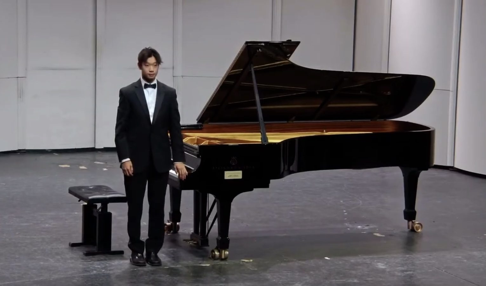
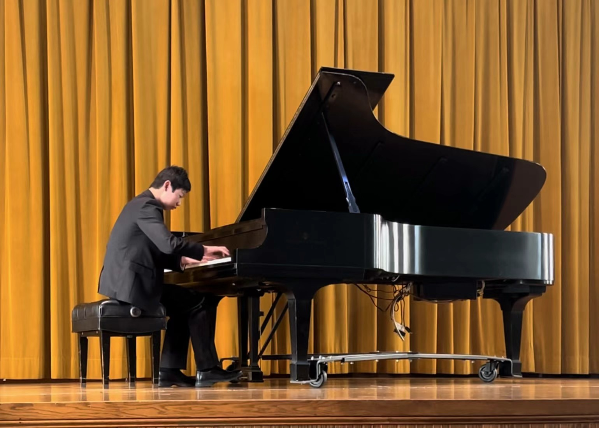
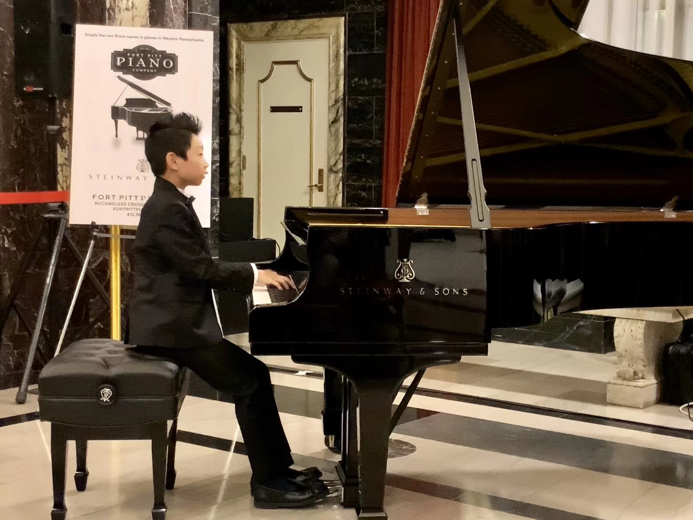
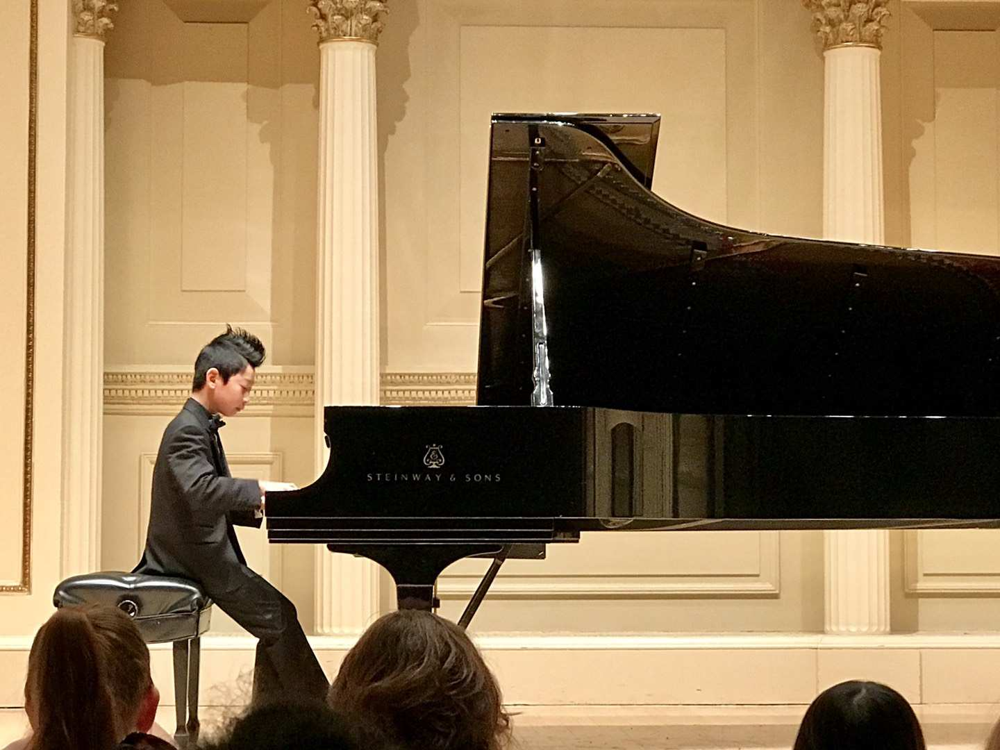

What is musicality?
I’ve played for exactly 12 years now, and I’m still struggling to learn and play different pieces. On one hand, I'm struggling to play Liszt's Grandés Etudes de Paganini No. 6 , and on the other hand, finding difficulty in performing Grieg's Sonata in E Minor Mvmt. 1. The difference is simply the battle between technicality and musicality. It's something I'm still trying to figure out.
Along the way I won the Pittsburgh International Piano Competition and took the Steinway Society of Western Pennsylvania two years running. What keeps me at it isn’t the results, though; it’s that my mood tends to follow whatever I’m practicing that week. Recordings live on my piano channel, @alex09092009.




